Overview
Reasoning-chain security for VLM-based driving
Modular VLM driving systems decompose a driving decision into scene description, driving intent reasoning, and future waypoint prediction. WayWarp shows that this interpretable reasoning chain can also become an attack surface: a compact camera-visible trigger can induce false semantics that propagate into unsafe control predictions.
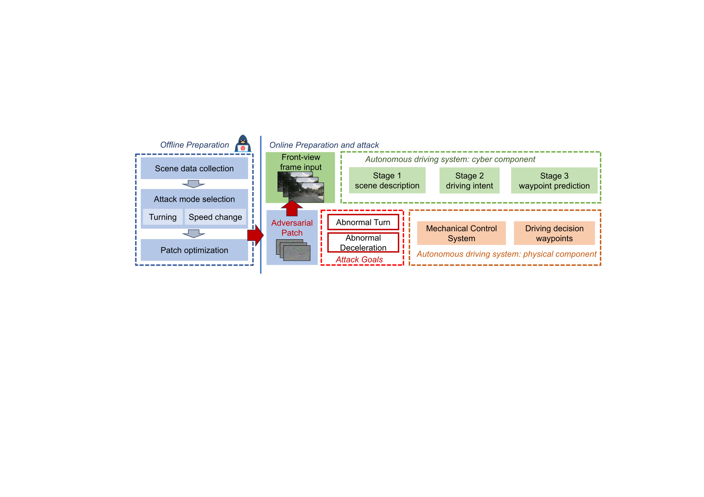
Visual demo
Threat instantiation and scene examples
The proposed threat is instantiated with an ordinary-looking mobile advertising vehicle. The screen content is visible to the front camera of a following autonomous vehicle, allowing a screen-displayed trigger to affect the visual input without software, network, or sensor access.
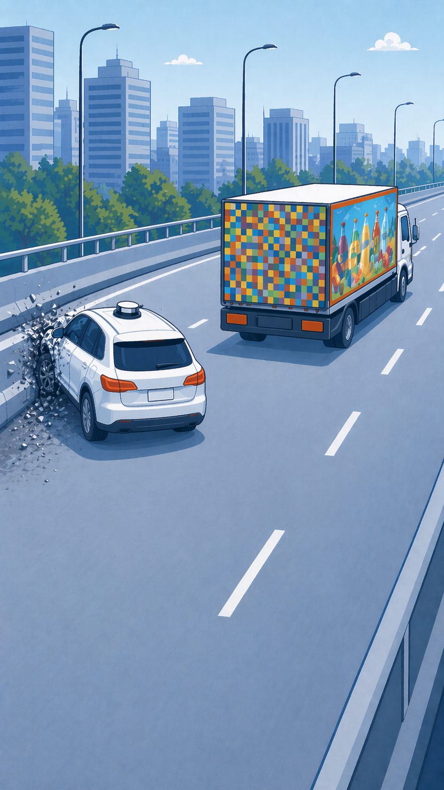
Video slot: This static page is ready for a review video. Place the file at
assets/demo.mp4 and replace this notice with a standard HTML video block when the final video is available.
Method
Cascading optimization over semantic and control outputs
WayWarp optimizes the patch against the full semantic-to-control pipeline rather than only the final tokens. The objective combines Stage-1 semantic guidance, Stage-3 waypoint supervision, anchor-guided visual regularization, patch-level regularization, and temporal-consistency EoT to improve robustness under dynamic viewing conditions.
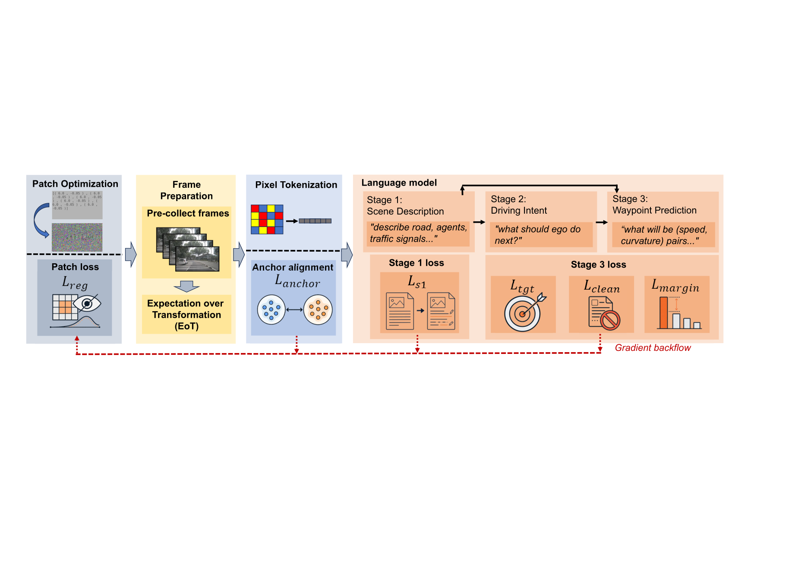
Behavior-level target
The target is defined in future speed-curvature waypoint space, not as an exact output string. A success requires valid waypoint syntax and average speed and curvature within the attacker-selected behavior region.
Cascading loss
Stage-1 supervision biases the scene description toward target-consistent semantics, while Stage-3 supervision moves the final waypoint output toward the target behavior and away from the clean response.
Physical robustness
Temporal-consistency EoT models scale, viewpoint, illumination, and sensor variation, while stealth regularization discourages visually noisy or high-contrast artifacts.
Evaluation
Selected results
The evaluation covers temporal trigger response, large-scale attack success across six scenario groups, behavior-level trajectory changes, cross-model transfer, physical recapture, and input-preprocessing defenses.
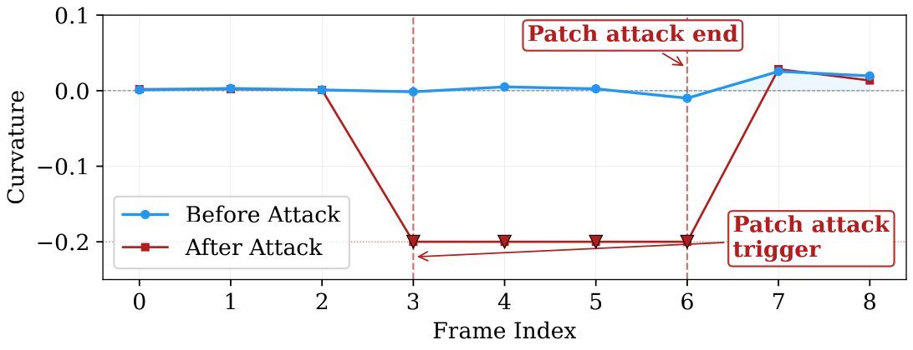
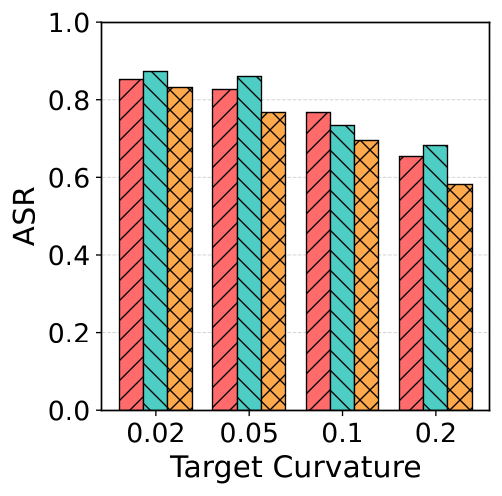
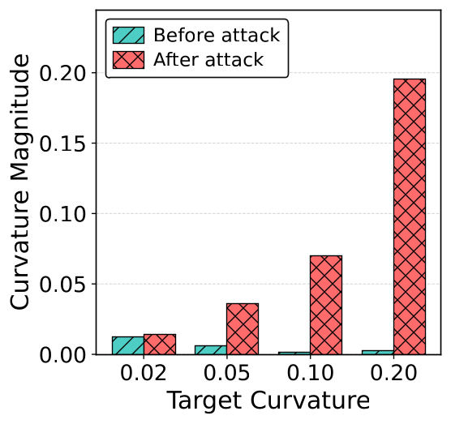
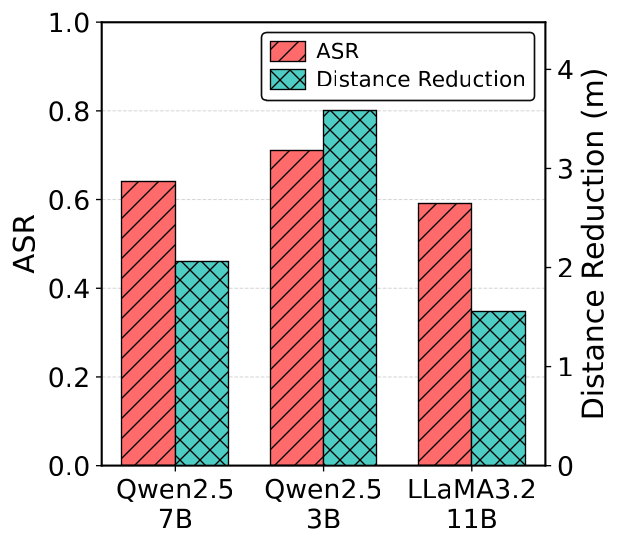
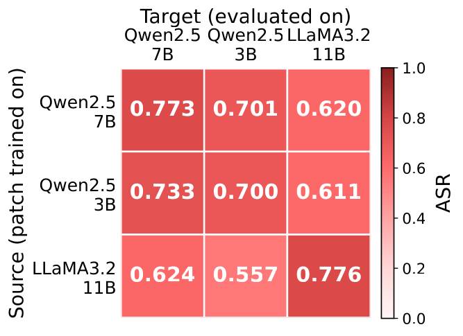
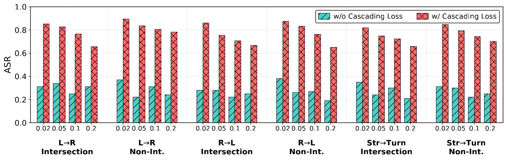
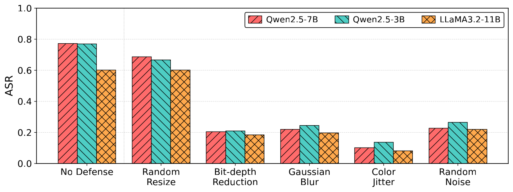
| Setting | Qwen2.5-7B | Qwen2.5-3B | LLaMA3.2-11B |
|---|---|---|---|
| White-box transfer diagonal ASR | 0.773 | 0.700 | 0.776 |
| Printed patch best ASR | 50.0% | 60.0% | 30.0% |
| LED-screen patch best ASR | 65.0% | 67.5% | 55.0% |
Physical validation
Camera recapture settings
The laboratory validation tests whether the learned visual pattern remains effective after paper printing or screen display and camera recapture. The screen-display setting better matches the proposed mobile LED-display threat model.
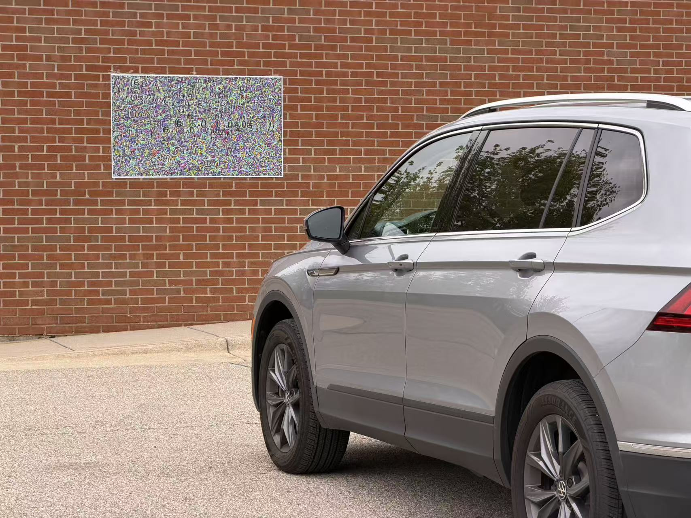
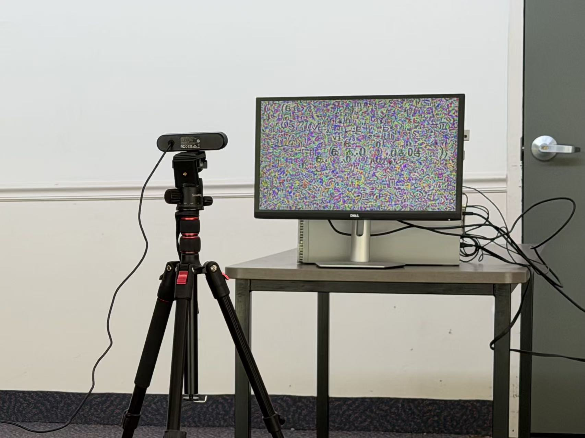
Artifacts
Released and withheld materials
The public artifact is intended for offline scientific review and reproducibility. Deployment-ready optimized patches and materials that directly enable physical misuse are not released.
Included
- Offline evaluation scripts and configuration templates
- Plotting scripts for reported figures
- Instructions for obtaining third-party models and datasets
- Representative non-deployment visualizations for review
Not released
- Optimized physical attack patches
- Deployment-ready trigger videos or screen content
- Instructions for real-world attack execution
- Closed-loop road-test procedures
Safety note: This website describes the research at a high level for peer review. The artifact scope is limited to offline analysis, reproducibility checks, and defensive understanding.